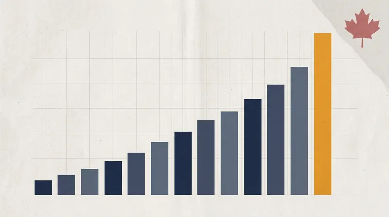

By Alex Drummond, Editor-in-Chief · May 1, 2026 · Fact-checked by Maya Chen

Ontario's online poker operators generated C$6.9 million in gross gaming revenue in March 2026, a new all-time monthly record for the regulated provincial market, on a fresh all-time monthly record of C$183 million in cash wagers. The figures, published this week by iGaming Ontario in its March market performance report, mark the first time either dimension of the province's peer-to-peer poker line has set a new high since 2024.
The revenue record narrowly eclipses the prior C$6.8 million high set in August 2025, and the wagers record beats the previous C$159 million peak from January 2024 by a wide margin. Year on year, March revenue grew just under three per cent from C$6.7 million in March 2025, while wagers grew 23.6 per cent from C$148 million in the same month a year earlier. The disproportionate growth in wagers against a modest bump in revenue continues a pattern that has defined the Ontario poker product for two years: players are putting more money into play, but the rake-to-revenue ratio is staying flat.
What the Records Mean
For a product that accounts for just over 1.7 per cent of Ontario's total online gaming revenue, the March numbers are a modest but real break from plateau. The regulator's monthly data has shown online poker oscillating between C$5 million and C$6.8 million in revenue for nearly two years, with the only meaningful outliers arriving in August 2024 (C$6.6 million) and August 2025 (C$6.8 million) during the annual WSOP Online Bracelet Series on GGPoker Ontario.
March, by contrast, sits outside the usual festival calendar. PokerStars Ontario ran a comparatively modest C$750,000-guaranteed Bounty Builder Series from March 13 to 23, the operator's final festival on the legacy client before its migration to the FanDuel-branded platform. GGPoker Ontario's Bounty Hunters Series opened on April 5, placing the majority of its Ontario overlay outside the March reporting window. The rest of the C$183 million in March handle came from daily and weekly tournament schedules, Spin & Gold lobbies, and cash-game traffic spread across the province's six licensed operators.
Put differently, the March record looks like a baseline-growth data point rather than a festival-driven spike. The 24-per-cent year-on-year lift in handle, recorded during a quiet month in the annual tournament calendar, suggests underlying demand in the Ontario peer-to-peer poker market is finally tracking the wider iGaming handle growth the province has seen in the casino and sports-book verticals. Whether that growth holds through April will depend on how quickly post-migration liquidity in PokerStars Ontario stabilises and how much of GGPoker Ontario's April festival activity the regulator captures in its next report.
The Casino Comparison
The March online casino line set a near-record of its own. Ontario casino operators generated C$318.5 million in gross gaming revenue on C$8.17 billion in wagers, just short of the all-time monthly casino revenue high. Total iGaming revenue across all three verticals, including C$76.2 million in sports betting, hit C$401.6 million on a total handle of C$8.33 billion. The overall handle number was the largest in Canadian iGaming history, eclipsing the previous high of C$8.27 billion set in December 2025.
Peer-to-peer poker's 1.7 per cent share of provincial iGaming revenue is broadly consistent with the regulator's own long-run average. Over the trailing 13 months, poker has averaged C$5.9 million in monthly revenue on C$141 million in monthly cash wagers, against an iGaming average of roughly C$365 million in monthly revenue across the whole market. The March share was marginally higher than that trailing average.
The Shared-Liquidity Context
The March record also lands into an unusually active regulatory window. The November 2025 Ontario Court of Appeal ruling on shared liquidity, which cleared the constitutional path for Ontario to pool its regulated players against international counterparts, is in the middle of what could be a twelve-month implementation study. Industry analysts at MundoVideo have estimated that shared liquidity with approved foreign jurisdictions could increase Ontario poker participation by 40 to 60 per cent once implemented. AGCO and iGaming Ontario continue to study the judgment, and the Canadian Lottery Coalition is expected to seek leave to appeal to the Supreme Court of Canada, with Alberta having been granted intervener status in the matter last week.
Against that backdrop, the March records are useful in two directions. They provide a fresh baseline against which any future shared-liquidity regime will be measured, and they give the regulator a clean set of figures to cite when explaining that the closed Ontario model is capable of growth without a policy change. Whether the growth rate visible in the March numbers is sufficient to satisfy the operators that have lobbied for shared liquidity is a separate question, to which the answer in most cases has been no.
Operator Share
iGaming Ontario does not publish operator-level breakdowns in its monthly reports, but industry traffic estimates place GGPoker Ontario as the market leader by a clear margin, with a share of online poker revenue that industry sources estimate at around 45 to 50 per cent. PokerStars Ontario sits in second place with a share in the 25 to 30 per cent range, and the shared MGM-Entain network in Ontario, branded as BetMGM Poker, PartyPoker Ontario and Bwin Ontario, accounts for most of the remainder. 888poker Ontario operates a smaller but stable slice of the market.
The March numbers do not change that ranking, but they do sit in a transition window. PokerStars Ontario's planned migration to the FanDuel-branded client begins on May 5 with the retirement of casino progressive jackpots, and the full launch of the unified Flutter platform inside the province is expected later in 2026. GGPoker Ontario's C$8 million GG Ontario Festival, opening on Saturday, will test whether the operator can turn strong underlying demand into a visible overlay commitment during a five-week run that is expected to dominate the April and May reporting periods.
Outlook
On the product side, the main question for the rest of 2026 is whether the March records reflect a genuine regime change in Ontario online poker demand or a one-off driven by calendar effects and a strong spring month across the iGaming vertical more broadly. The next two monthly reports, covering April and May, will capture the GG Ontario Festival, the GG World Festival's US$300 million global guarantee sitting adjacent to the province, and the last of the PokerStars Ontario legacy client.
If April and May sustain the C$180-million-plus wagers line that March produced, the Ontario poker market will have crossed into genuine growth territory for the first time in the post-launch cycle. If they regress to the trailing 13-month C$141 million average, the March number will read as a one-off. The record, for now, stands on its own, and on the regulator's own measure, the Ontario peer-to-peer poker product has just posted its best month since the market opened in April 2022.